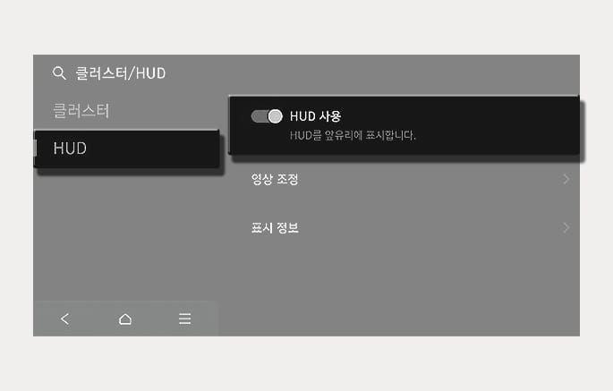

헤드업 디스플레이 기능 설정하기

2C_HUDSetinfo
차량의 시동이 'ON'일 때 인포테인먼트 시스템에서 설정 > 클러스터/HUD > HUD > HUD 사용을 선택하십시오.
-
헤드업 디스플레이가 켜지고, 앞유리에 정보가 표시됩니다.
-
헤드업 디스플레이 기능을 켠 후 헤드업 디스플레이의 영상을 조정하거나 표시 정보를 변경할 수 있습니다.
업데이트로 인해 인포테인먼트 시스템의 상세 설정이 변경될 수 있습니다. 자세한 설정 방법은 인포테인먼트 시스템 웹 매뉴얼을 참고하십시오.
-
헤드업 디스플레이 사용 중 항상 전방 도로 상황을 주시하고, 차로를 변경하기 전에는 직접 주위를 확인하십시오.
-
헤드업 디스플레이에 표시되는 경고에만 의존해 차로를 변경하지 마십시오. 후측방 안전 시스템은 운전자 편의를 위한 보조 기능입니다.
-
앞유리에 선팅 필름을 부착하지 마십시오. 선팅 필름의 영향으로 헤드업 디스플레이 영상이 잘 보이지 않을 수 있습니다.
-
안전한 주행에 방해가 될 수 있으므로, 앞유리 하단 대시보드 주변에 스티커나 액세서리 등을 부착하지 마십시오.
-
다음과 같은 경우 헤드업 디스플레이 영상이 잘 보이지 않을 수 있으므로 주의하십시오.
-
운전 자세가 바르지 않은 경우
-
편광 선글라스를 착용한 경우
-
헤드업 디스플레이 커버 위에 물체가 있는 경우
-
노면이 젖어 있는 경우
-
차량 내부에 부적절한 조명이 켜져 있거나 밖에서 빛이 들어오는 경우
-
운전자 시력에 맞지 않는 안경을 착용한 경우
-
-
헤드업 디스플레이 영상이 정상적으로 보이지 않는 경우 인포테인먼트 시스템의 설정 메뉴에서 영상 위치를 조절하거나 밝기를 조절하십시오.
-
헤드업 디스플레이에 표시되는 정보는 전방의 도로와 겹쳐 표시되므로 운전 중 피로감 및 불편함을 유발할 수 있습니다. 영상을 조절한 후에도 이런 증상이 지속되는 경우에는 헤드업 디스플레이를 끄십시오.
-
헤드업 디스플레이 시스템을 점검 또는 정비 할 때 영상 보정 작업 및 전용 유리창을 사용 해야 하므로 당사 직영 하이테크센터로만 문의하십시오. 하이테크센터 현황은 '보증수리안내'를 참고하십시오.